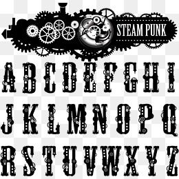

Кросссбраузерность
Сайт должен одинаково хорошо смотреть во всех популярных браузерах. орега,Yandex,Google,Chrome, Microsoft Edge.

Соответствие дизайна
Если сайт верстается по определенному макету дизайна, то он должен быть выполнен со 100%-м сходством исоблюдением шрифтов, цвета,отступов и т.д..

Шрифты
Не больше трех шрифтов на сайт. Один для заголовков,второй -для всех отстальных текстов, третий-для выделения выжных слов. Должно хватить.

Цвета
Обычно на сайте два цвета:ведущий и акцентный.Подобрать удачную цветовую пару можно за счет насмотренности или специальных инструментов.